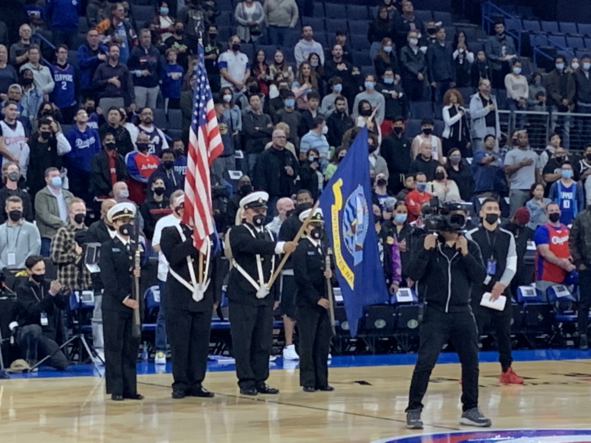
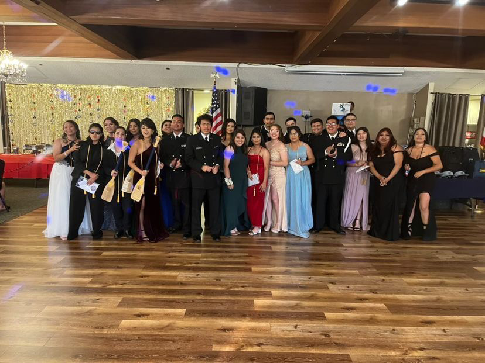
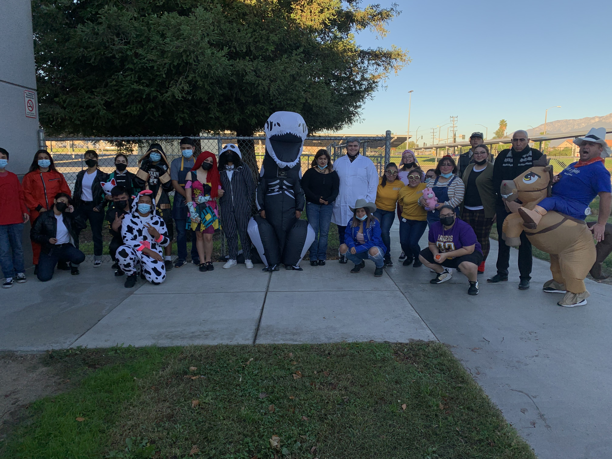
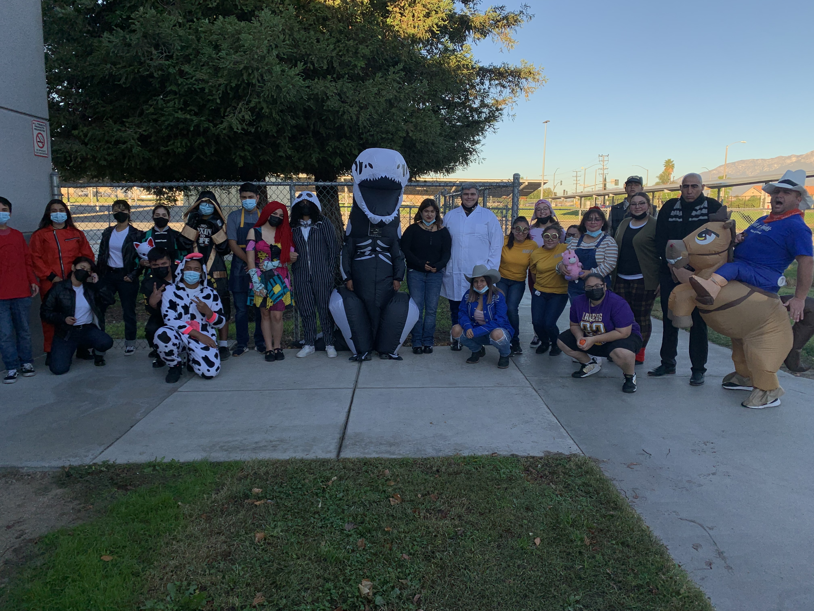

Reyna Curiel
Hi, I'm Reyna Curiel and I am an eager and diligent prospective employee with extensive volunteer experience in customer service. Volunteer experience includes assisting customers, tracking/accounting NJROTC inventory, managing collection of financial funds for school events, and more. Excels in environments that require attention to detail, working within fast-paced conditions, and working well within a team.
To prove this I helped with parking detail at Rialto High School football games. I organize and coordinate the staffing, scheduling, and volunteer clearance permissions for 40-50 cadets for the event along with monitoring and directing vehicles to ensure efficient and timely arrivals for guests, while ensuring the safety of pedestrian pathways. I also assisted 35-40 cadet volunteers by conducting various checks on operational areas to ensure employees completed tasks appropriately, while providing various assistance when needed. Another event I helped was called Bike Rodeo and it was for the community to come and socialize and explore. I helped with assisting with event set-up preparations by constructing tents for 50 various community booths and prepping other logistical event needs, providing several reporting updates to Lead Cadets for status checks, progress reports, and completed tasks, and assisting with tracking and issuances of various service repairs for community members as well as various raffle prizes to event attendees. My determination can be demonstrated by looking at my accomplishments in high school. I had an overall G.P.A. of 3.8, was considered a scholar to my school, and graduated with a seal of biliteracy, the merit award, Principal's award, and ROTC cord. Having these awards prove that I am hardworking and consistent and strive for the best.
In ROTC I was given the rank and responsibility of Cadent Master Chief. This is the highest enlisted rank one can achieve. Given this rank you also inherit a lot of responsibility. I provided the younger cadets with knowledge of drill and ensured they knew their basic knowledge such as eleven general orders to the century, chain of command, rank structure, uniform measurements etc. I also passed on crucial information to the enlisted cadets and officers. I was the middleman between officers and enlisted. Any information that needed to be passed on was given to me to share. I also work hand in hand with the commanding officer and executive officer. I helped make decisions for what was best for the unit. I helped the executive with teaching and learning about armed exhibition(throwing rifles). To learn and teach armed exhibition requires dedication, commitment, and strength. I taught several younger cadets the basics of armed exhibition. I also took part in performing an excerpt of an armed exhibition in front of cadets, instructors, family, friends, and the Area 11 Commander for our Annual Military Inspection. To do this performance requires the ability to perform under pressure which we all exceeded in. I was also in charge of discipline. If a cadet had stepped out of line I was sent to handle the situation properly. I had to sit down and talk with them and find the problem then create a solution to make sure the unit runs smoothly.
Experience
Master Chief
• Organized Unit for events
• Taught young cadets basic leadership
• Spoke at large events representing the Unit
Cashier/Restock
• Responsible for checking/helping out customers
• Responsible for restocking inventory
Think Together
• Helped students with homework
• Taught and reviewed sections of schoolwork
• Made projects for children to learn Math in a fun way
• Helped over 100 students
Education
University of California, Riverside
Portfolio




